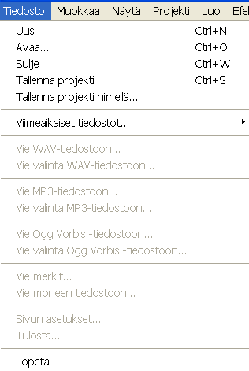
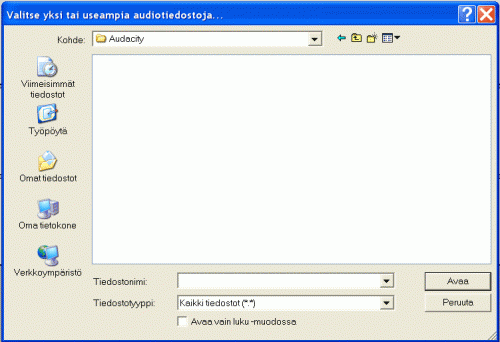
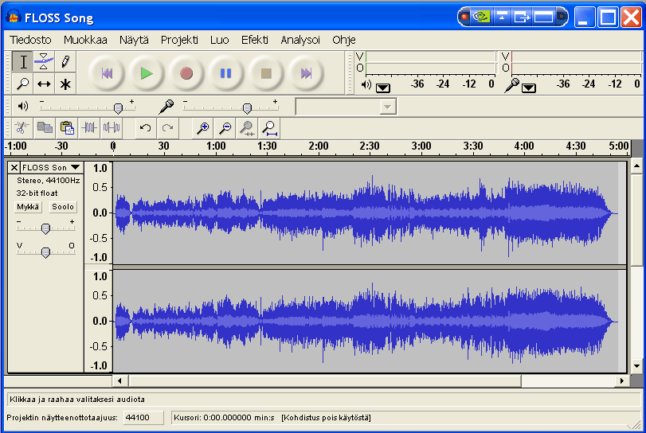
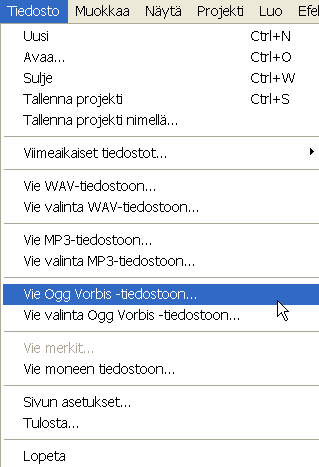
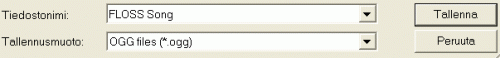
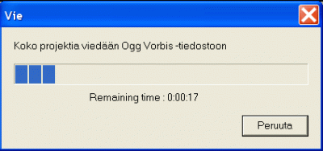
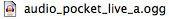

Ohjelman nimi : Audacity
Ohjelman versio : 1.2.6
Audacityssä luodut projetit tallennetaan aina ohjelman omassa tiedostomuodossa, jota useimmat muut ohjelmat eivät voi avata. Niinpä on välttämätöntä viedä projekteja yleisimpiin tiedostomuotoihin, jotta niitä voi käyttää muissa ääniohjelmissa ja mediasoittimissa.
Audacity voi viedä seuraavia tiedostomuotoja: AIFF, MP3 ja Ogg Vorbis.
AIFF-tiedostot tarjoavat pakkaamatonta CD-laatuista ääntä, joten tätä muotoa tulisi käyttää, josa tahdot avata Audacity-projektisi jossain muussa tuotanto-ohjelmassa tai CD-levyjen tekemiseen tarkoitetussa ohjelmassa.
MP3 ja Ogg Vorbis ovat molemmat pakattuja ääniformaatteja, joten niiden äänenlaatu on matalampi, mutta tiedostot ovat paljon pienempiä, joten ne ovat ihanteellisia mediasoittimia varten. Tärkein ero näiden formaattien välillä on se, että OGG Vorbis on täysin ilmainen, mutta MP3 ei ole. Tämän vuoksi sinun täytyy ladata ja asentaa LAME MP3 -enkooderi ennen kuin viet MP3-muodossa.
Viedäksesi tiedoston Audacitystä sinulla täytyy olla Audacity-tiedosto avoinna. Jos tiedostoa ei jo ole avoinna nauhoitus- tai editointisessiosta, voit avata tiedoston napsauttamalla Avaa Audacityn Tiedostovalikossa.

Tällainen ikkuna avautuu:

Käytä tätä ikkunaa valitaksesi tiedoston, jonka tahdot avata. Kun olet valinnut tiedoston, napsauta Avaa avataksesi sen.
Näet nyt jotain tällaista:

Viedäksesi tiedoston napsauta Tiedosto ja sen jälkeen napsauta tiedostomuotoa, jossa tahdot viedä tiedoston.

Nyt näet tällaisen ikkunan:

Käytä ikkunaa muokataksesi tiedostonimeä ja valitse tai luo sopiva kansio, johon tallennat uuden tiedoston. Kun olet valinnut sopivan kansion, klikkaa Tallenna aloittaaksesi viennin.
Näet nyt tällaisen ikkunan:

Projektin viemisen vaatima aika riippuu nauhoituksen pituudesta ja tietokoneen nopeudesta. Kun tiedoston vieminen on valmis, ylläoleva ikkuna katoaa. Tiedosto on nyt ilmestynyt kansioon, johon tallensit sen, ja näyttää suunnilleen tälle:

There has been error in communication with Booktype server. Not sure right now where is the problem.
You should refresh this page.